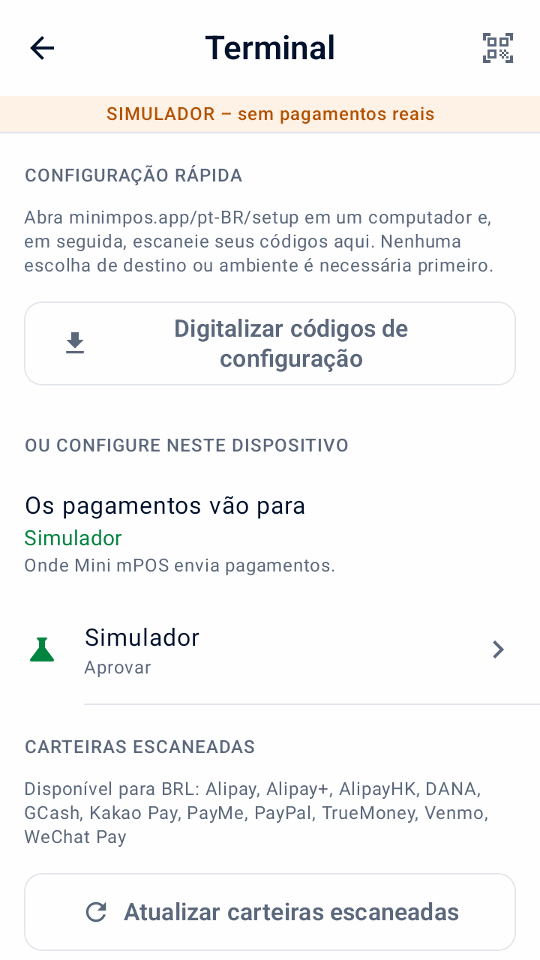

Guia
Início rápido
Instale o Mini mPOS, conecte-o à Adyen e verifique seu primeiro pagamento TEST. Siga apenas as etapas de configuração do seu dispositivo.
Apenas explorando? Experimente o simulador sem uma conta ou terminal Adyen.
Verifique os pré-requisitos
Verifique esses requisitos antes de instalar o aplicativo. O dispositivo executa Mini mPOS; o terminal de pagamento aceita o cartão. Eles podem ser o mesmo dispositivo.
Escolha uma configuração de dispositivo
- Em um terminal Adyen
- A verificação completa em um dispositivo. Use um terminal de pagamento Adyen Android com Android 9 ou posterior. Confira os modelos atuais no Guia do terminal Adyen Android.
- Tablet ou telefone com terminal de rede
- Recomendado para um contador. Um tablet ou telefone Android 9+ na mesma rede local que um terminal Adyen. Mini mPOS não está instalado nesse terminal.
- Tablet ou telefone com terminal em nuvem
- Para um dispositivo e terminal em redes diferentes. Ambos precisam de acesso à internet; os pagamentos chegam ao terminal através da Adyen.
- Tap to Pay em um telefone
- Nenhum terminal separado. Use um telefone com comunicação de proximidade (NFC) e o aplicativo Adyen Payments, ativado pelo Suporte Adyen. Verifique o Requisitos do telefone Adyen e Países e métodos de pagamento suportados pela Adyen.
- A impressão necessita de um terminal com impressora incorporada. Se não houver nenhum, você pode enviar por e-mail ou compartilhar recibos.
- A leitura de códigos de barras, códigos de reembolso QR ou códigos de configuração precisa de uma câmera.
Preparar a rede
Peça ao administrador de rede do site para permitir o seguinte:
- Internet
- Saída HTTPS em TCP 443 do dispositivo e terminal para
*.adyen.come*.adyenpayments.com. Permitir estes por nome de domínio, não endereço IP, porque os endereços IP da Adyen mudam. - Líquido local (para terminais de rede)
- O tablet ou telefone deve alcançar o endereço IP do terminal em TCP 8443. Conecte ambos à mesma rede, e certifique-se de que o isolamento do cliente Wi-Fi (comum em redes convidadas) não os separe.
- Recibos de e-mail (opcional)
- Acesso de saída para seu servidor SMTP, geralmente TCP 587 (STARTTLS) ou 465 (SSL/TLS).
Dê a cada terminal de rede um endereço IP fixo com uma reserva DHCP em seu roteador. Os dados móveis funcionam para tablet ou telefone em configurações de nuvem e Tap to Pay, mas não com um terminal de rede. Para os próprios requisitos do terminal, consulte o Guia de configuração de rede Adyen.
Preparar credenciais da Adyen
Para validar com a Adyen, você precisa de uma conta de comerciante de teste ativa com pagamentos presenciais habilitados e acesso Customer Area. Comece com credenciais TEST e um terminal TEST ou Adyen Payments Test. Para LIVE, use a conta real, credenciais e terminal ou aplicativo Adyen Payments correspondentes.
Para criar ou editar credenciais, seu usuário Customer Area precisa Manage API credentials ou Merchant admin. Estas são permissões de usuário, não funções para a chave API.
Habilite os métodos de pagamento POS que você pretende aceitar; siga o Guia de configuração do método de pagamento Adyen. Mini mPOS usa os métodos configurados do terminal.
- No Customer Area, vá para Developers › API credentials. Crie uma credencial para Mini mPOS e gere sua chave API; veja o Guia de credenciais Adyen API.
- Para a chave API principal, habilite estas funções adicionais:
- Management API - Terminal actions read
- Management API - Terminal settings read and write
- Management API - Terminal settings Advanced read and write
- Cloud Device API role
- Para LIVE, observe o Prefixo de URL LIVE de Developers › API URLs.
- Para Tap to Pay, Mini mPOS cria automaticamente uma credencial separada com escopo de comerciante com o Adyen Payments App role e uma chave de cliente. O suporte da Adyen deve habilitar Tap to Pay e tornar esta função atribuível a partir da credencial da sua empresa.
- Se desejar configurar o dispositivo manualmente:
- Observe o Conta de comerciante.
- Para um terminal Adyen, terminal de rede ou Tap to Pay, encontre o Chave compartilhada (identificador, senha e versão) em Devices › Device settings › Integrations › Terminal API › Encryption key. Os terminais em nuvem não o utilizam.
Importante
Mini mPOS não possui servidor, portanto as chaves API são armazenadas criptografadas no dispositivo. Crie credenciais apenas para Mini mPOS com apenas as funções API necessárias para sua configuração. Defina um PIN de administrador e revogue as credenciais se um dispositivo for perdido. Veja o política de segurança.
Nota
Mini mPOS é independente; não é feito, endossado ou apoiado pela Adyen. Siga a documentação vinculada da Adyen para procedimentos de conta e plataforma.
Instale o aplicativo
Baixe o APK assinado minimpos-<version>.apk na versão mais recente.
- Terminal Adyen
- No Customer Area, carregue o APK e implante-o em seus terminais; veja o Guia de implantação do aplicativo Adyen. Seu usuário precisa de permissão para fazer upload e implantar aplicativos.
- Abra Mini mPOS no terminal, selecione Conectar-se à Adyen e toque em Continuar.
- Tablet ou telefone
- Abra o APK no dispositivo e permita a instalação a partir do seu navegador ou gerenciador de arquivos quando o Android solicitar.
- Abra Mini mPOS, selecione Conectar-se à Adyen e toque em Continuar.
Importante
Instale todas as atualizações da mesma fonte de assinatura. Um terminal rejeita uma atualização assinada com uma chave diferente. Para construir e assinar o seu próprio, consulte o guia do contribuidor.
Conectar-se à Adyen
Conectar pares Mini mPOS com seu terminal ou aplicativo Adyen Payments e verificar sua chave API da Adyen. Siga apenas a parte da sua configuração. Cada um tem duas opções: o auxiliar de configuração (recomendado), ou entrada manual em Configurações › Terminal.

Digitalizar códigos de configuração de um computador
- Em um computador confiável, abra o auxiliar de configuração. Funciona offline e não envia nada.
- Escolha onde o Mini mPOS é executado e o ambiente, TEST ou LIVE.
- Escolher Automático (recomendado) para inserir apenas a chave Adyen API; o dispositivo procura o resto. Escolha Manual para inserir todos os detalhes da conexão.
- Insira os detalhes solicitados.
- Clique Fazer códigos QR. Mantenha a página aberta: ela mostra o código de transferência de 12 caracteres.
- Em Mini mPOS, abrir Configurações › Terminal e toque em Digitalizar códigos de configuração ou o ícone QR no canto superior direito. Leia as orientações, toque em Já tenho códigos e escaneie cada código.
- Verifique o destino e o ambiente, insira o código de transferência e toque em Verificar e importar.
- Se solicitado, escolha seu terminal. Para Tap to Pay, conclua o registro quando o aplicativo Adyen Payments for aberto. Nada é salvo até que todas as verificações sejam aprovadas.
Conectar um terminal Adyen
Pré-requisitos
- Mini mPOS implantado no terminal
- Um Chave Adyen API do ambiente do terminal
- Acesso à Internet para o terminal
- Auxiliar de configuração (recomendado)
- No auxiliar de configuração, escolha Em um terminal Adyen, o terminal TEST ou LIVE ambiente e Automático. Insira a chave API e depois digitalizar os códigos.
Manual
- Em Configurações › Terminal › Adyen API, insira a chave Adyen API e a conta do comerciante, além do prefixo URL ativo para LIVE. Toque Encontre o terminal para configurar para testar o acesso API e preencher a chave compartilhada automaticamente, ou Teste API para continuar manualmente.
- Verifique ou insira a chave compartilhada e toque em Testar conexão.
Emparelhar um terminal na sua rede
Pré-requisitos
- Mini mPOS instalado no tablet ou telefone
- Um Chave Adyen API do ambiente do terminal
- O dispositivo e terminal no mesma rede, com TCP 8443 aberto entre eles
- Auxiliar de configuração (recomendado)
- No auxiliar de configuração, escolha Em um tablet ou telefone, com um terminal na mesma rede, o terminal TEST ou LIVE ambiente e Automático. Insira a chave API e depois digitalizar os códigos. Se for encontrado mais de um terminal, escolha o seu.
Manual
- Em Configurações › Terminal, conjunto Os pagamentos vão para para Um terminal na sua rede. Abaixo Ambiente, escolha TEST ou LIVE para corresponder ao terminal.
- Abaixo Adyen API, insira a chave Adyen API e a conta do comerciante, além do prefixo URL ativo para LIVE. Toque Encontre o terminal para configurar testar o acesso API e escolher o terminal. Insira quaisquer detalhes ausentes manualmente.
- Verifique ou insira o endereço IP do terminal e ID do Terminal (POIID). Ambos estão na tela de informações do dispositivo do terminal.
- Verifique ou insira a chave compartilhada e toque em Testar conexão.
Conectar um terminal em nuvem
Pré-requisitos
- Mini mPOS instalado no tablet ou telefone
- Um Chave Adyen API do ambiente do terminal
- Acesso à Internet para o dispositivo e o terminal
- Auxiliar de configuração (recomendado)
- No auxiliar de configuração, escolha Em um tablet ou telefone, com terminal pela internet (nuvem), o terminal TEST ou LIVE ambiente e Automático. Insira a chave API e depois digitalizar os códigos. Se for encontrado mais de um terminal, escolha o seu.
Manual
- Em Configurações › Terminal, conjunto Os pagamentos vão para para Um terminal pela internet (nuvem). Abaixo Ambiente, escolha TEST ou LIVE para corresponder ao terminal.
- Abaixo Adyen API, insira a chave Adyen API e a conta do comerciante, além do prefixo URL ativo para LIVE. Toque Encontre o terminal para configurar testar o acesso API e escolher o terminal. Insira quaisquer detalhes ausentes manualmente.
- Verifique ou insira o ID do Terminal (POIID) e toque em Testar conexão.
Configurar Tap to Pay
Pré-requisitos
- Tap to Pay e o Adyen Payments App role habilitado para sua empresa pela Adyen; entrar em contato com o suporte da Adyen
- Mini mPOS instalado em um telefone suportado
- Um Chave Adyen API e a chave compartilhada
- No Google Play, instale Adyen Payments Test para TEST ou Adyen Payments para LIVE. Ambos podem permanecer instalados.
- Em Mini mPOS, abrir Configurações › Terminal e selecione Tap to Pay neste telefone. Escolha TEST ou LIVE sob Ambiente; Mini mPOS abre apenas o aplicativo desse ambiente.
- Auxiliar de configuração (recomendado)
- No auxiliar de configuração, escolha Em um telefone, com Tap to Pay no aplicativo Adyen Payments e TEST ou LIVE. Insira a chave Adyen API correspondente, a conta do comerciante e a chave compartilhada e, opcionalmente, um ID da loja. Digitalize os códigos e toque em Verificar e importar. Mini mPOS cria a credencial de registro e abre o aplicativo Adyen Payments para concluir o registro como parte da importação.
Manual
- Em Configurações › Terminal › Adyen API, insira a chave Adyen API e a conta do comerciante. Para pagamentos em tempo real, insira também o prefixo URL em tempo real. Toque Teste API.
- Abaixo Tap to Pay, opcionalmente toque em Escolher loja ou insira um ID de loja. Nenhuma chave API separada é necessária.
- Toque Configurar Tap to Pay e realizar o cadastro no aplicativo Adyen Payments.
- Em Mini mPOS, inserir a chave compartilhada.
O aplicativo Adyen Payments não pode executar um teste de conexão, portanto confirme a configuração com um Pagamento TEST. Para cancelar o registro do telefone mais tarde, use Remover este telefone.
Criar uma chave de criptografia ausente
Se um terminal físico ainda não tiver chave de criptografia, a configuração oferece Criar chave de criptografia após a aprovação das verificações de credenciais e contas.
- Verifique o ID do terminal e o ambiente mostrado e depois confirme. Não altere as configurações deste terminal em outro lugar enquanto a chave é criada.
- Caso a conexão ainda não tenha sido verificada, atualizar a configuração do terminal; veja recuperação de configuração de chave.
- Se a criação for interrompida, toque em Retomar configuração da chave. Para configuração QR, leia os mesmos códigos novamente com seu código de transferência.
Valide sua configuração TEST
- Em Configurações › Terminal, verifique se o ambiente está TEST. Conclua a final Testar conexão etapa para verificar o acesso API e verificações de conexão suportadas.
- Terminal físico: execução Testar conexão e verifique se passa.
- Tap to Pay: confirme se o telefone está registrado em Adyen Payments Test. A verificação da conexão valida apenas a configuração: não há diagnóstico do terminal. Use o pagamento de teste abaixo para verificar o comportamento do pagamento.
- Em Configurações › Pagamentos, verifique a moeda. Em Configurações › Imposto, verificar as taxas e se os preços incluem impostos.
- Na página inicial, toque em Nova venda, adicione um Item personalizado e toque em Cobrar.
- Toque Pagar e siga o Guia de teste Adyen POS para um pagamento bem sucedido.
- Verifique se o resultado está aprovado e se o recibo possui valor, moeda e imposto corretos. Abra a venda em Histórico. Combine com seu Referência PSP ao pagamento no TEST Customer Area.
- Reembolsar o pagamento e verifique o resultado final do reembolso no TEST Customer Area. Reembolso solicitado não é uma confirmação final.
- Repetir a venda com um cenário de pagamento recusado do Guia de teste Adyen POS. Verifique se Mini mPOS mostra uma recusa, não uma aprovação; veja pagamentos recusados.
Aviso
Se o resultado for desconhecido, não pague novamente. Siga o etapas de recuperação primeiro.
Em seguida, configure produtos, recibos e acesso de pessoal em Usando Mini mPOS.
Ativar pagamentos LIVE
Antes de usar recursos de terminal opcionais, revise Capacidades da Adyen e teste seu destino real: gorjetas no terminal, pagamentos parciais, avisos do comprador, doações e digitação manual do cartão, processamento off-line e reconciliação terminal. A disponibilidade depende da configuração da Adyen e do destino do pagamento; os resultados do simulador não são verificação de terminal real.
- Em TEST, experimente apenas os fluxos de trabalho opcionais que você planeja usar: depósitos, gorjetas de recebimento, links de pagamento ou carteiras digitalizadas. Depósitos e gorjetas de recebimento retêm fundos até a captura. Verifique os resultados finais da captura na Customer Area.
- Teste os métodos de entrega de recibos que você planeja usar: imprimir em uma impressora real, enviar um e-mail de teste ou compartilhar um recibo.
- Definir um Administrador PIN e, se necessário, um Gerente PIN; veja acesso de pessoal.
- Mude para o terminal LIVE ou para o aplicativo LIVE Pagamentos, com credenciais LIVE. Para um terminal de rede/nuvem ou Tap to Pay, escolha LIVE sob Ambiente. Digite o Prefixo de URL LIVE; veja o Guia de endpoints ativos da Adyen. Tap to Pay precisa de registro novamente no ambiente selecionado.
- Em Configurações › Terminal, verifique se o ambiente está LIVE. Conclua a final Testar conexão etapa para verificar o acesso API e verificações de conexão suportadas.
- Terminal físico: execução Testar conexão e verifique se passa.
- Tap to Pay: confirme se o telefone está registrado no LIVE Adyen Payments aplicativo. A verificação da conexão valida apenas a configuração: não há diagnóstico do terminal.
Aviso
Alternar entre TEST, LIVE e o simulador exclui todo o histórico de pagamentos no dispositivo, incluindo dados de recuperação para pagamentos inacabados. Resolva todos os pagamentos sob Precisa de atenção primeiro.
Para verificações diárias e reconciliação, consulte Fechar o dia.
Experimente o simulador
Explore Mini mPOS sem uma conta ou terminal Adyen. Nenhum cartão é cobrado.
Para explorar avisos offline, ative Aprovações off-line em Configurações › Simulador. As vendas simuladas aprovadas não têm referência PSP e reportam um lote não confirmado. Inspecione a venda no Histórico e experimente reconciliação terminal. Esta é uma demonstração, não um teste de autorização offline real ou upload posterior para a Adyen.
- Instale o aplicativo em um telefone ou emulador Android 9+.
- Na tela de boas-vindas, selecione Experimente uma demonstração e toque em Continuar. As outras opções são Digitalizar códigos de configuração, do auxiliar de configuração ou de outro dispositivo, e Conectar-se à Adyen. Os terminais Adyen selecionam inicialmente a conexão; outros dispositivos selecionam a demonstração.
- Em Configurações › Simulador, escolha o resultado do pagamento, o prazo e se há impressora disponível.
Os produtos de amostra e o histórico são rotulados como demonstrações. Cada uso de Adicionar dados de amostra substitui os detalhes comerciais do recibo por detalhes fictícios do café, mesmo que já existam amostras; o layout do recibo e as configurações de entrega permanecem inalterados. Contagem de amostras em totais e relatórios de dias de demonstração; eles não são pagamentos reais. Em Configurações › Dados e transferência, usar Adicionar dados de amostra ou Remover dados de amostra; a remoção mantém seus próprios produtos, histórico e configurações. Para links de demonstração off-line, consulte links de pagamento.
Pronto para conectar? Em Configurações › Simulador, toque em Configurar pagamentos reais. Revise os dados de amostra e os atalhos de recibo e toque em Continuar com a configuração. Abrir a configuração não altera nenhum dado. Uma mudança confirmada para TEST ou LIVE exclui todo o histórico local, incluindo operações inacabadas; produtos de amostra e detalhes do recibo ficam. Remova amostras indesejadas separadamente e revise detalhes comerciais de recibos fictícios antes de pagamentos reais. Comece com TEST.